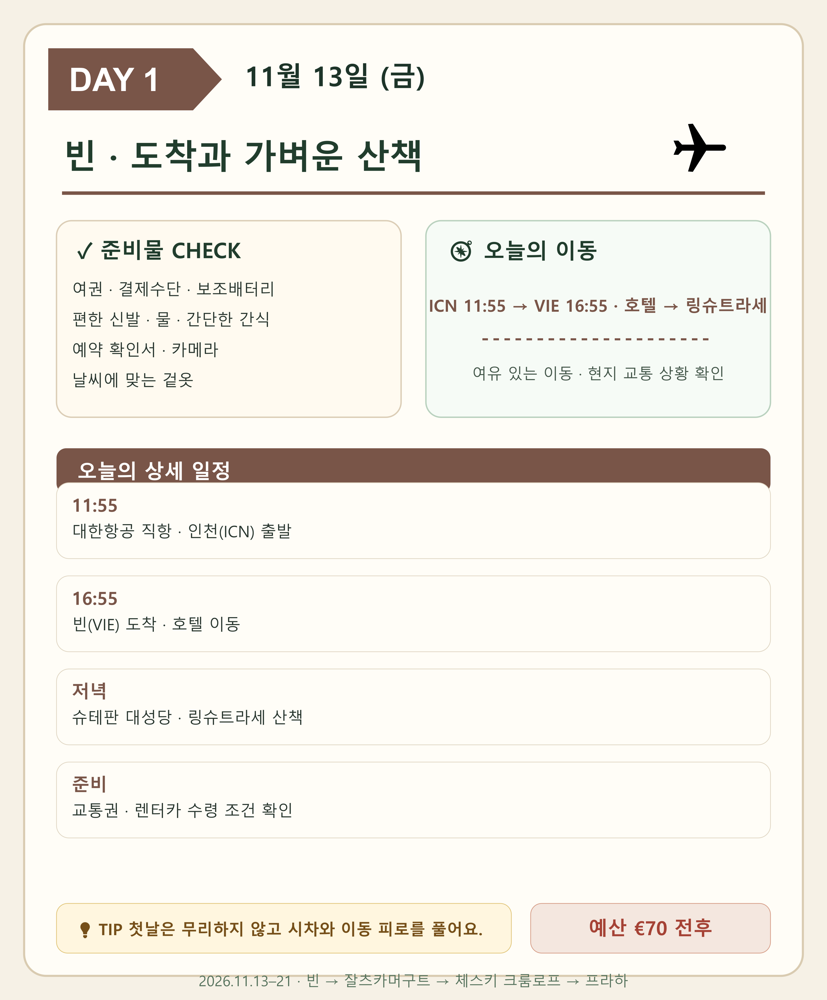
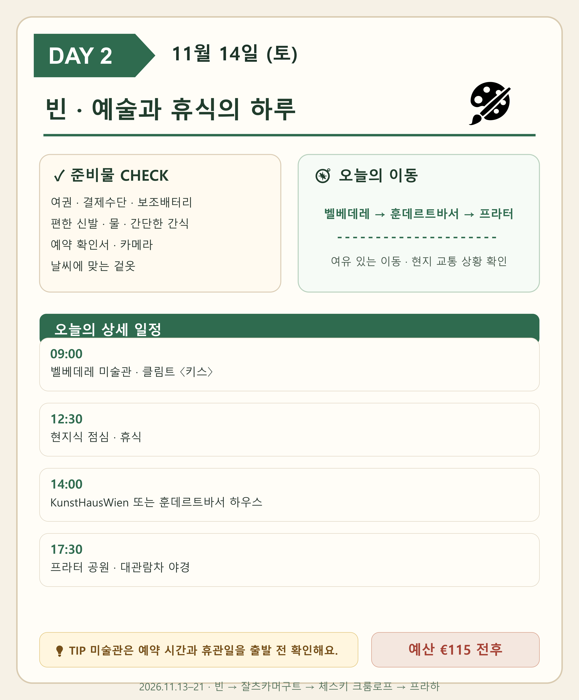
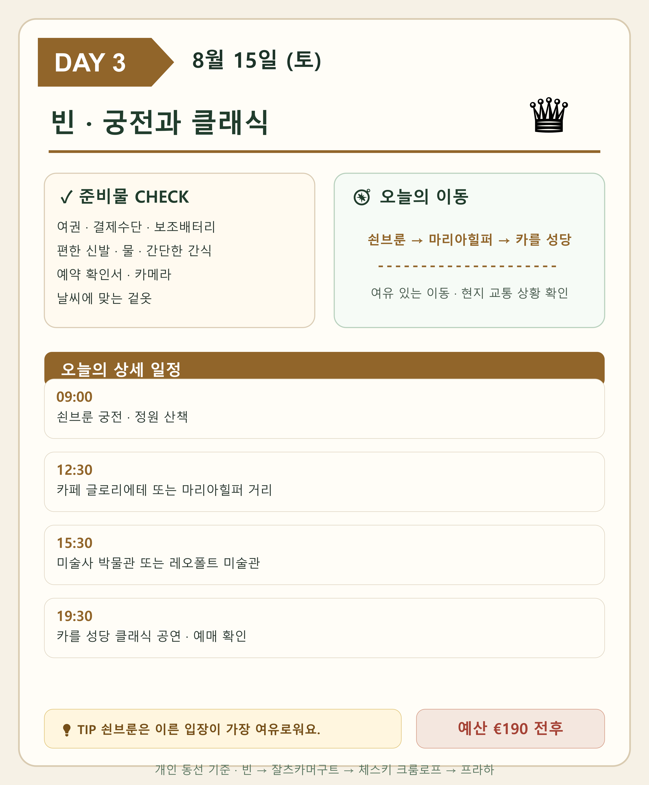
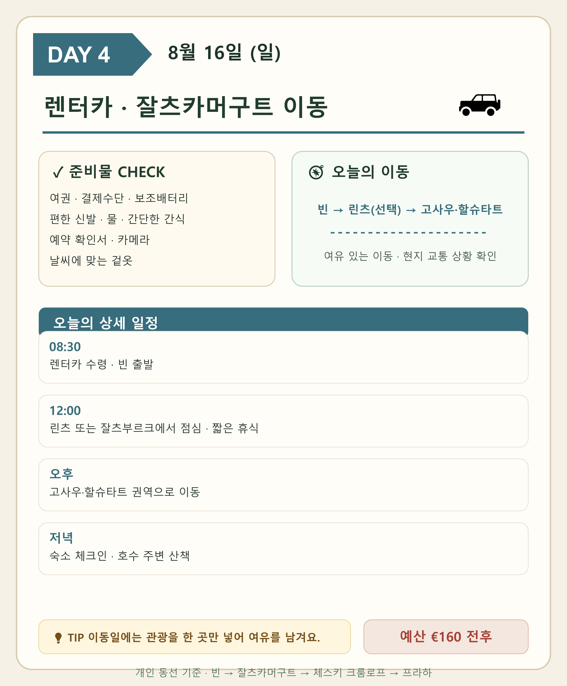
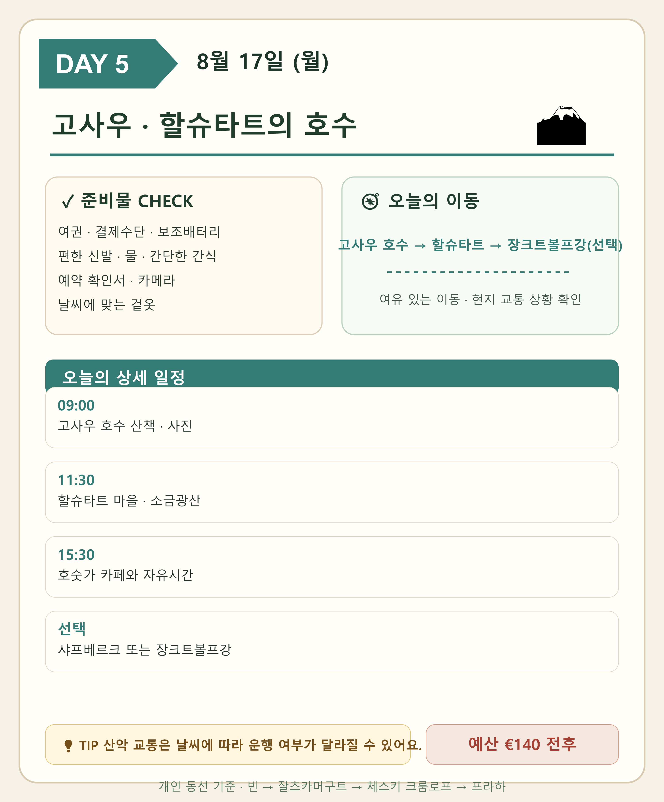
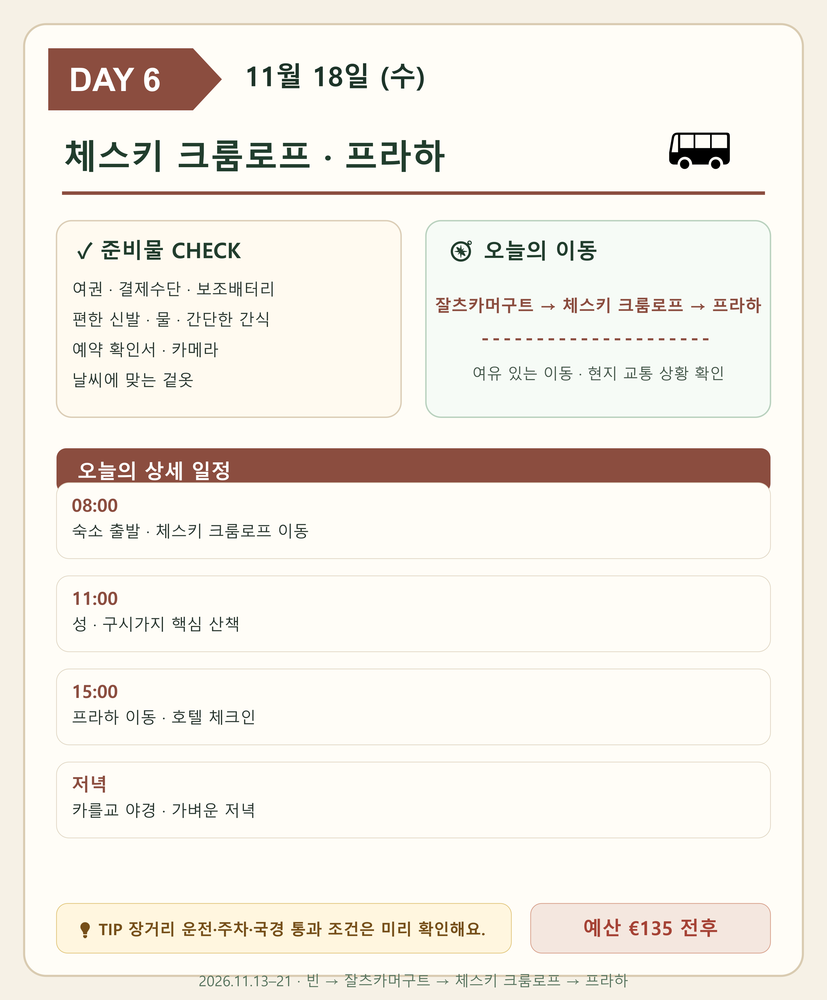
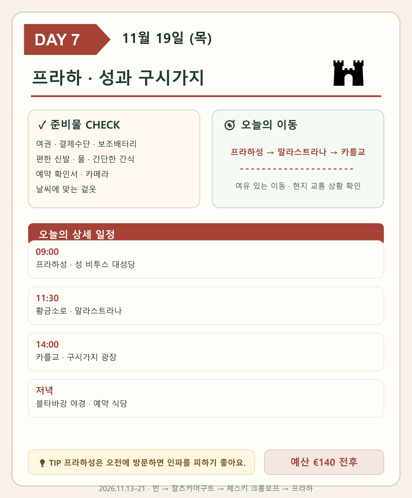
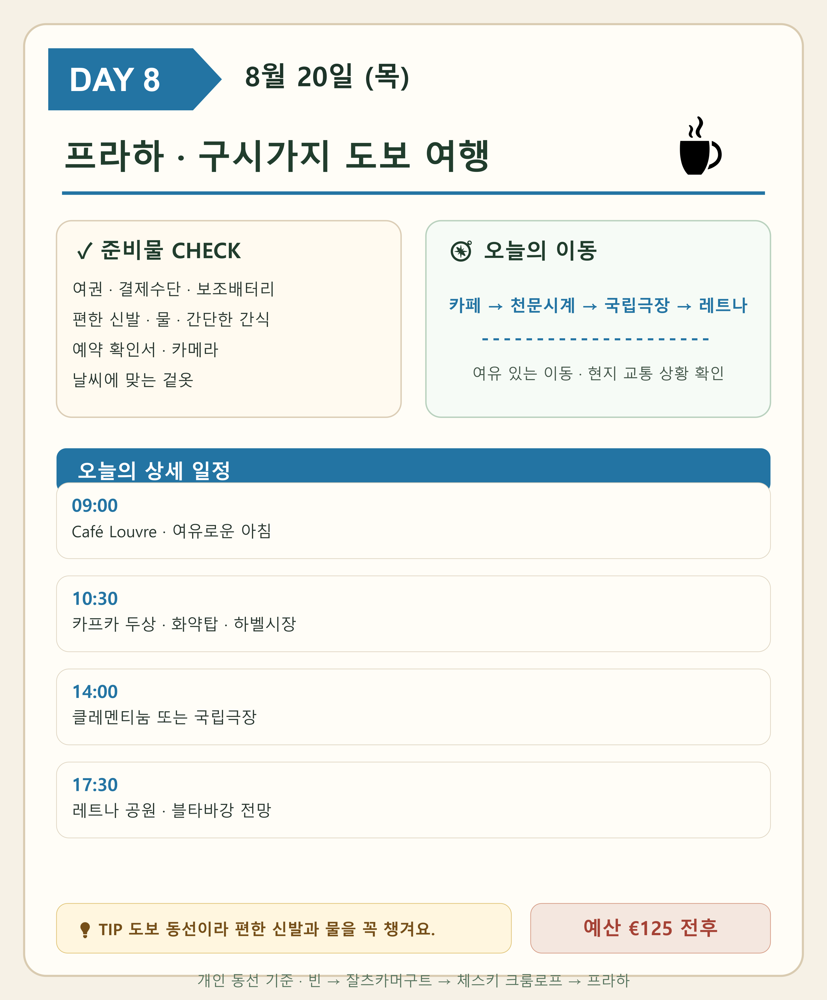
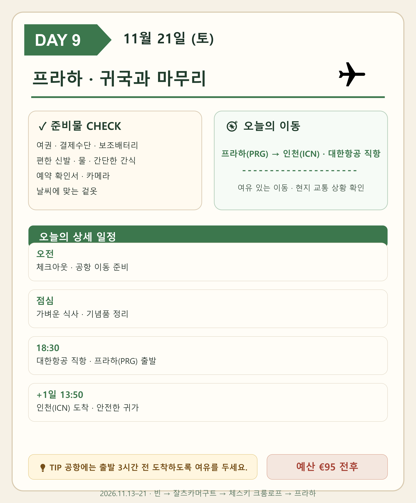

2026 중부유럽 여행 포스터수작업 동선 지도
 지도를 누르면 원본 크기로 열립니다.
지도를 누르면 원본 크기로 열립니다.각 일정 포스터를 누르면 원본 크기로 열립니다.

DAY 1 · 원본 크기로 보기
DAY 2 · 원본 크기로 보기
DAY 3 · 원본 크기로 보기
DAY 4 · 원본 크기로 보기
DAY 5 · 원본 크기로 보기
DAY 6 · 원본 크기로 보기
DAY 7 · 원본 크기로 보기
DAY 8 · 원본 크기로 보기
DAY 9 · 원본 크기로 보기